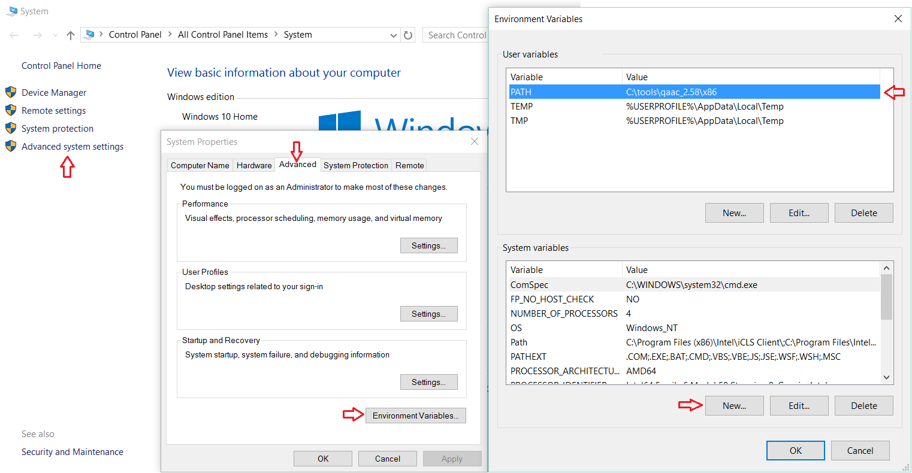
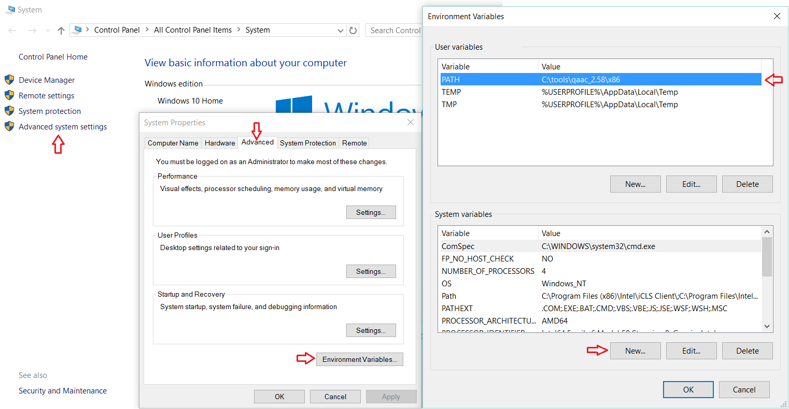

Introduction
AAC is an advanced lossy audio codec which is well-suited for encoding 2.0 audio, achieving transparency at around 180 kbps. It can be used to encode lossless 1.0 and 2.0 main audio tracks for 720p and SD encodes, as well as all stereo commentary tracks.
Qaac uses Apple's implemetation of the AAC encoder, which is currently considered to be superior to Nero's AAC encoder at low bitrates. This makes qaac especially desirable for encoding commentary tracks.
Installation
Install Apple Application Support first. This will enable qaac to use Apple's official library to encode AAC files.
Optional: FLAC input: Show
After extracting qaac it is a good idea to add it to your system PATH so it can be called from any directory. On Windows 10:

Click OK to save the settings.
Test if qaac is correctly installed and added to your PATH by opening the command prompt (cmd.exe) and typing
If you see
Use
Qaac can be used in a single step with eac3to, for example to encode track 4 from BDMV:
You can also use it on a previously demuxed audio track, for example:
If you followed the optional step, qaac can be also run directly on a FLAC file obtained from a remux.
-V parameter determines the variable bitrate and therefore quality. There are 15 settings for this parameter, 127 being the highest quality setting:
For main audio, you can use -V 127 for 720p or -V 109 for SD encodes (or adjust to ~180 kbps for 2.0 audio)
For the commentary tracks, you can use
Setting
The resulting .m4a file containing the AAC track can be muxed in using mkvmerge as usual.
AAC is an advanced lossy audio codec which is well-suited for encoding 2.0 audio, achieving transparency at around 180 kbps. It can be used to encode lossless 1.0 and 2.0 main audio tracks for 720p and SD encodes, as well as all stereo commentary tracks.
Qaac uses Apple's implemetation of the AAC encoder, which is currently considered to be superior to Nero's AAC encoder at low bitrates. This makes qaac especially desirable for encoding commentary tracks.
Installation
- Apple Application Support x86 (updated: Feb 2017) (You can also extract it from the iTunes Installer yourself using 7-zip.)
- qaac x86
- (optional) libFLAC x86 x86
Install Apple Application Support first. This will enable qaac to use Apple's official library to encode AAC files.
Optional: FLAC input: Show
Extracting libFLAC_dynamic.dll to qaac/x86 will enable qaac to directly use FLAC files for input.
After extracting qaac it is a good idea to add it to your system PATH so it can be called from any directory. On Windows 10:

Click OK to save the settings.
Note: If you haven't already, it's a good idea to add eac3to to your PATH as well by clicking Edit.
Test if qaac is correctly installed and added to your PATH by opening the command prompt (cmd.exe) and typing
qaac --check.If you see
qaac 2.58, CoreAudioToolbox 7.xx.x.x then it has been installed correctly.Use
Qaac can be used in a single step with eac3to, for example to encode track 4 from BDMV:
eac3to BDMV/ 4:stdout.wav | qaac -V 63 -i --no-delay -o commentary-eng.m4a -You can also use it on a previously demuxed audio track, for example:
eac3to commentary.ac3 stdout.wav | qaac -V 63 -i --no-delay -o commentary-eng.m4a -If you followed the optional step, qaac can be also run directly on a FLAC file obtained from a remux.
qaac -V 109 --no-delay -o stereo-eng.m4a main-stereo.flac-V parameter determines the variable bitrate and therefore quality. There are 15 settings for this parameter, 127 being the highest quality setting:
0 9 18 27 36 45 54 63 73 82 91 100 109 118 127 For main audio, you can use -V 127 for 720p or -V 109 for SD encodes (or adjust to ~180 kbps for 2.0 audio)
For the commentary tracks, you can use
-V 63 or less (adjust to ~70 kbps for stereo audio).Setting
--no-delay obviates the need for a container delay.The resulting .m4a file containing the AAC track can be muxed in using mkvmerge as usual.